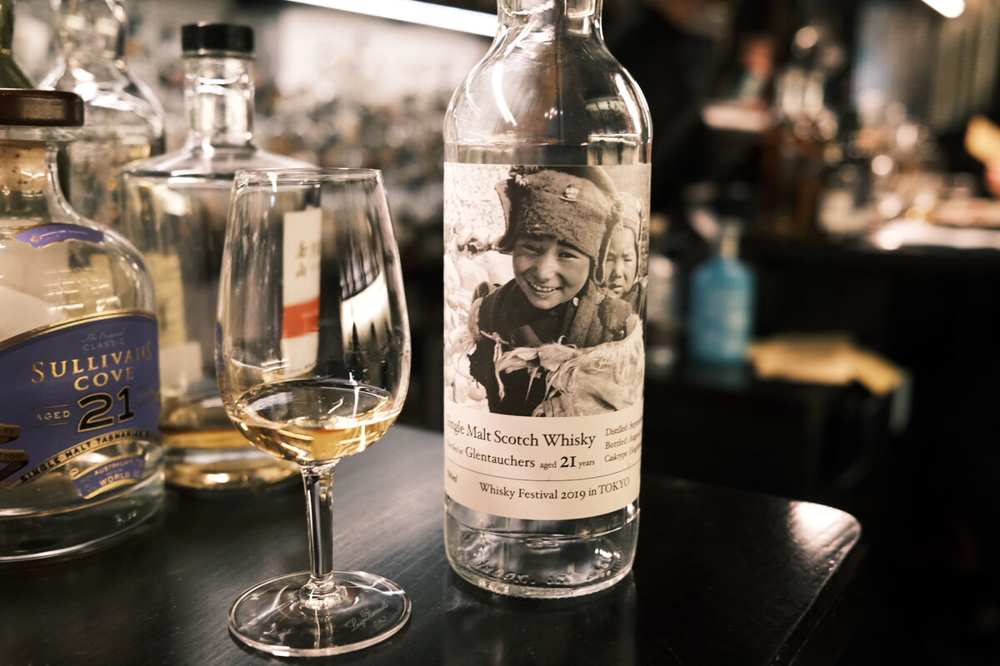

Glentauchers 1992 Acorn 21 years 57.1% (hogshead)
For the Whisky Festival 2019 in Tokyo. Hogshead 6028.
Colour Light gold.
Nose Waxy malt. Ginger candies. Quite floral, a little butter. Crispy pancakes and butter. Whipped cream. Lemon and sugar too! Fresh cut grass. With water, coconut reveals itself. Berry jams… spicy marmalade? Hoggie magic.
Palate Malt bomb. Bright fruits. Oranges, lemons, pineapple. Lovely acidity. Bananas. Peaches and cream. A real fruit platter! Sweetened fruit juice. Liquorice and fruit jellies. Oily, thick texture. Real spicy. With water, creamy cereal notes: porridge, muesli. Oak.
Finish Orange juice and a drop of apple cider vinegar. Oak and oak spices: cinnamon, ginger, cloves, a bit of chilli. Really quite long and hot, almost like a spicy stir fry… quite something. Warmest finish for quite some time.
Comments Bright and fresh. Gingery malt, fruit platters. Hoggie magic. 89/100.

Posted by Dominic on 14 Jun 2021